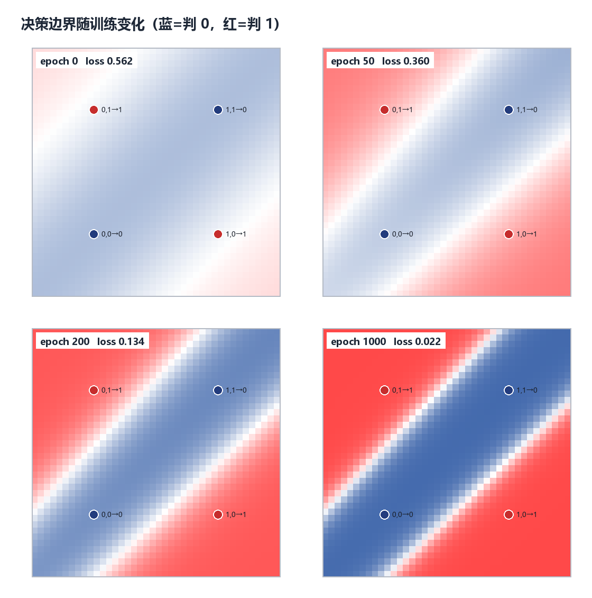

MLP 学习参数的实现与可视化
用 NumPy 写一个 2-2-1 的网络，让它学 XOR，然后把训练过程中参数的变化画出来。
做的是 XOR：四个样本，(0,0) 和 (1,1) 输出 0，(0,1) 和 (1,0) 输出 1。 这四个点在平面上画出来，一条直线分不开，所以必须有隐藏层。
整份代码没用 PyTorch，前向、损失、反向传播、参数更新都是自己写的。 好处是每个数怎么来的都能对上，也能把权重一路存下来画图。
一、网络结构
输入两个数，中间两个 sigmoid 神经元，输出一个 sigmoid 神经元， 代表判为 1 的概率。一共 9 个可学习参数。
| 参数 | 形状 | 含义 |
|---|---|---|
W | 2 × 2 | 输入层到隐藏层的权重 |
b1 | 1 × 2 | 隐藏层偏置 |
v | 2 × 1 | 隐藏层到输出层的权重 |
b2 | 1 × 1 | 输出层偏置 |
二、损失与反向传播
目标值是 0 或 1，用二元交叉熵：
先对输出层求误差，再乘 v 传回隐藏层， 经过 sigmoid 的导数 h(1−h)，得到各参数的梯度：
δ₁ = (δ₂vᵀ) ⊙ h(1−h) dW = xᵀδ₁ db₁ = Σδ₁
更新就是 θ ← θ − lr·∇θ。学习率 0.5，全批量，跑 4000 轮。
三、训练结果
损失曲线
前 200 轮掉得很快，从 0.56 到 0.13。一千轮之后基本不动了， 在 0.02 附近慢慢磨到 0.005。曲线是光滑的，没有抖，因为每次更新用的是全部四个样本。

决策边界
把平面切成 40×40 的格子，每格送进网络算一个概率，画成热力图。
第 0 轮整片区域的概率都在 0.29 到 0.59 之间，0.5 那条线很虚，四个样本里两个判错。 第 50 轮四个都判对了，但 (0,1) 和 (1,0) 只有 0.69，离边界不远。 第 200 轮拉开到 0.87 和 0.12，第 1000 轮中间那条带子收窄，左上到右下这一条变成一条细线。

参数轨迹
训练完是 W = [[6.51, −6.77], [−6.77, 6.51]]，
v = [[11.81], [11.81]]，都比初始值大了好几倍。权重变大，
sigmoid 的过渡带就被压窄，概率往 0 和 1 两端靠。
图上只有三条线，不是漏画了。初始化时两个隐藏单元设成对称，梯度也一直对称， 所以 W11 和 W22 重合，W12 和 W21 重合，v1 和 v2 重合。 这能收敛，代价是两个隐藏单元在学同一个东西。

隐藏层激活
四个样本在隐藏层的输出差得很远：(0,0) 是两个 0.03，(0,1) 是 0.00 和 0.95， (1,0) 是 0.95 和 0.00，(1,1) 是两个 0.02。输出层只要把这两个数加权求和， 就能把四个点分开。

四、关键代码
前向和损失：
h = sigmoid(X @ W + b1) p = sigmoid(h @ v + b2) loss = -np.mean(T * np.log(p + 1e-12) + (1 - T) * np.log(1 - p + 1e-12))
反向传播：
dz2 = (p - T) / len(X) # 输出层误差 dv = h.T @ dz2 db2 = dz2.sum(axis=0, keepdims=True) dh = dz2 @ v.T # 传回隐藏层 dz1 = dh * h * (1 - h) # 乘 sigmoid 的导数 dW = X.T @ dz1 db1 = dz1.sum(axis=0, keepdims=True) W -= LR * dW # 更新 b1 -= LR * db1 v -= LR * dv b2 -= LR * db2
五、怎么跑
python train_mlp.py # 训练，写出 mlp_data.json python render_figs.py # 从 json 生成四张图 python -m http.server 8000 # 本地预览这个页面
训练只用 NumPy，画图用 Pillow。每轮的损失、五个时刻的权重和网格概率都存着， 在 mlp_data.json 里，约 21 万字符。
六、两个没解决的问题
一是对称初始化。两个隐藏单元从头到尾一样，等于只有 1 个有效单元。 换成随机初始化，两条参数线会分开，边界形状也会不同。这次没做对比。
二是输出层权重涨到 11 以后，sigmoid 接近饱和，梯度很小， 后面三千轮损失只从 0.02 掉到 0.005。想再低，得换激活函数或者加正则， 单纯加 epoch 没用。